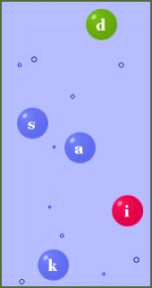

Si vous aimez jouer aux jeux, vous pouvez faire une pause jeu entre chaque leçon pour varier un peu.
Pour jouer aux jeux
1. Cliquez sur OK
2. Cliquez sur « Jeux » dans le menu
3. Pour retourner à l'écran des leçons, cliquez sur « Cours » dans le menu du programme.